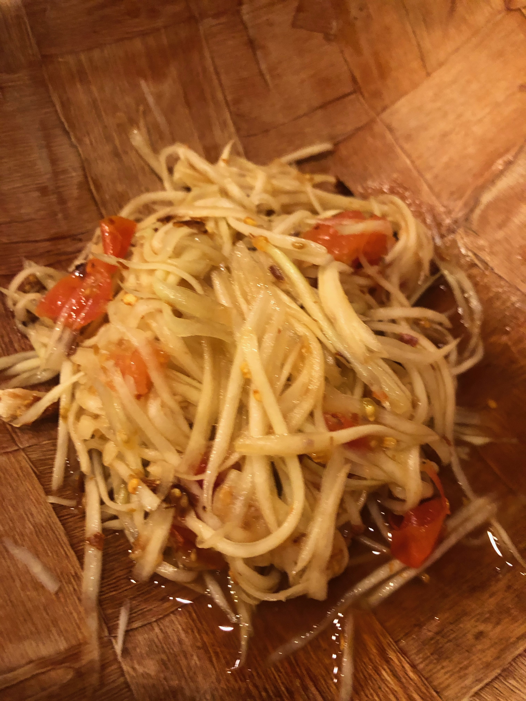
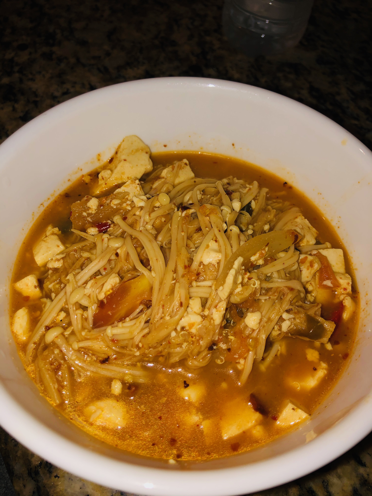
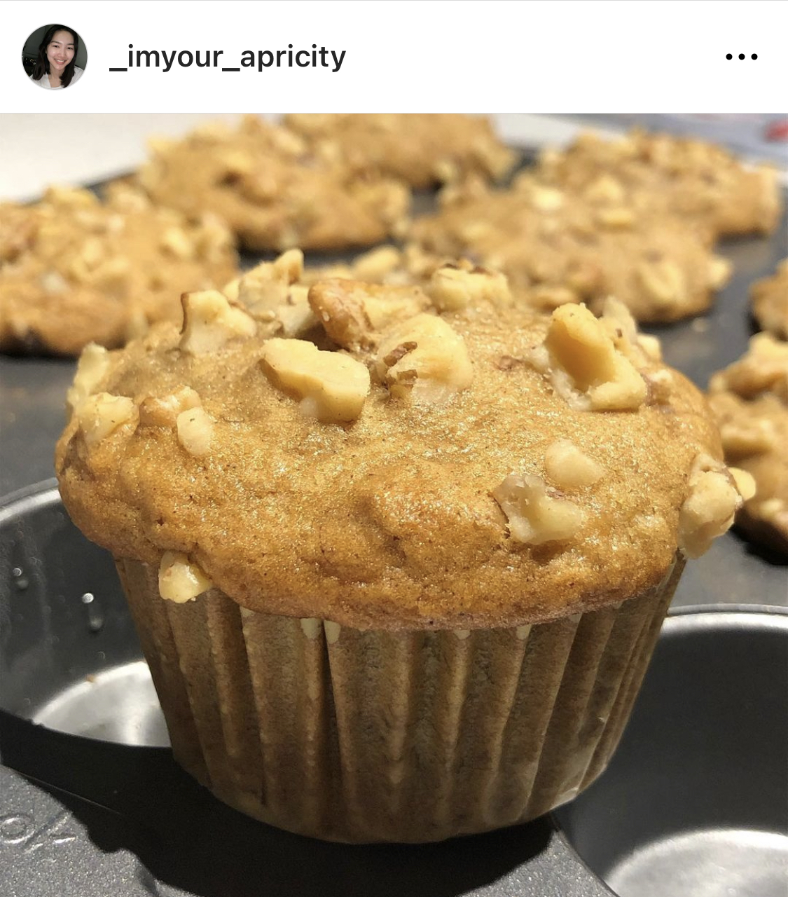

My name is Wanrueni Khuantang. You can also call me Kai. I am a vegan food lover. I love discovering and making delicous and healthy plant-based recipes. If you love my recipes, download my cookbook here!
Highlights

Thai Papaya Salad

Thai Tom Yum soup with Enoki mushroom and tofu

Banana muffin with walnuts
I am a sucker for Asian cuisine. That's why my passion is recreating the comfort food everyone loves, but veganized! I hope we can all enjoy healthy and delicious food while having fun and being creative with it.